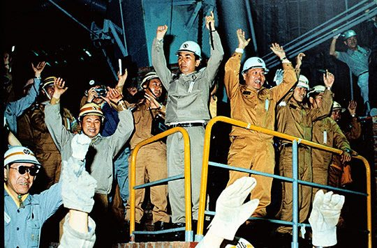
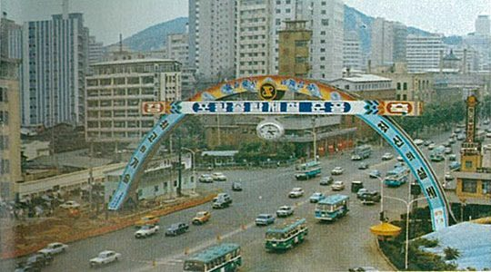
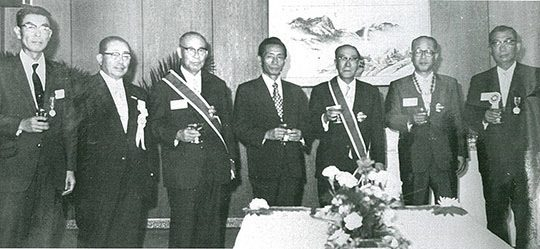
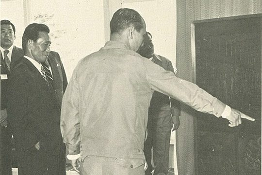

보도일 2015-02-09출처 조선일보 프리미엄조선 연재
박태준은 아침에 몸을 깨끗이 씻었다. 아들의 성공을 빌기 위해 정한수를 뜨러 나가는 어머니의 심정으로 숙소를 나섰다. 형산강 다리를 건넜다. 어느새 말간 해가 한 발 남짓 올라와 있었다. 영일만 바다에는 눈부신 아침햇살이 쏟아지고 있었다. 오전 7시 30분, 박태준을 비롯한 임원들과 건설 요원들이 700입방미터 고로의 제2주상에 올라섰다. 막 출선구 뚫기가 끝난 참이었다. 과연 한국 역사상 최초의 대형고로에서 쇳물이 나올 것인가. 그리하여 22개 공장으로 구성된 ‘일관‧종합제철’은 정상적으로 가동될 수 있을 것인가.
“펑!”
굉음이 터졌다. 출선구를 뚫고 나온 오렌지색 섬광이 사람 키보다 높이 치솟았다. 박태준은 자신도 모르게 주먹을 불끈 쥐었다. 천천히 불꽃이 스러졌다. 고로 안에 침묵이 가득 찼다. 그때였다. 숨을 죽이고 내려다보는 사람들의 발밑으로 꾸물꾸물 기어 나오는 물체가 있었다. 용암 같은 황금색 액체였다. 아침마다 바라본 영일만의 일출, 수평선에 올라앉는 찰나의 그 태양 빛깔이었다. 쇳물이었다.
“나왔다! 나왔다!”
순식간에 고로 내부는 환호의 도가니로 바뀌었다. 포스코의 상징마크와 닮은 도랑을 따라 흘러가는 황금색 쇳물. 그 역사적 현장을 지켜보는 사내들의 눈에서 왈칵왈칵 눈물이 흘러내렸다.
“만세! 만세!”
사내들의 두 팔이 머리 위로 힘차게 올라갔다. 박태준은 자신도 모르게 두 팔을 올렸다. 감격의 ‘만세’를 외치며 눈물도 흘렸다.

포항제철소 제1고로의 폭포 같은 첫 출선, 활짝 열린 한국 경제사의 새 지평. 그 지점에서 포항 1기 종합준공식을 위해 남은 과제는 정상조업 도달이었다.
일찍이 풍수의 달인 이성지가 예언한 대로(연재 29회) 황량한 모래벌판은 가뭇없이 사라지고 높다란 굴뚝들이 그 시(詩)의 대나무를 대신했다. 3년에 걸쳐 연인원 810만 명, 경부고속도로 건설비의 3배에 이르는 1135억5300만 원을 투입했다. 약 8만2000개의 기계를 공장에 설치하고, 약 2만7000개의 콘크리트파일과 약 2만8000개의 강철파일을 땅속에 박았다. 한국 역사상 초유의 대역사가 예정 공기를 두 달이나 단축해 완벽하게 끝났다.
더욱 반갑고 놀라운 일은, 조강 톤당 건설단가가 251달러에 불과하다는 것. 비슷한 시기에 건설된 대만 CSC의 667달러, 일본 오기시마제철소의 626달러에 비해 40% 수준이었다. 이것은 세계적 철강기업으로 도약할 포스코의 근원적인 원가경쟁력을 보증했다.
1973년 7월 3일 ‘포항종합제철 종합준공식’이 열렸다. 정확한 명칭은 ‘포항종합제철 제1기 종합준공식’이겠으나 이 땅의 첫 고로가 첫 쇳물을 쏟아내고 첫 일관제철소가 완공되었으니 그렇게 붙이는 것이 더 좋았다. ‘사진만장(沙塵萬丈)’의 영일만 모래벌판엔 22개 대형공장이 늠름한 위용을 갖추고 있었다. 도저히 기대할 수 없다는 통념을 통쾌하게 깨버린 대역사이기에 사람들은 ‘무에서 창조한 유’라고 불렀다.
서울 광화문에 대형 경축아치가 세워졌다. 기념우표도 발행되었다. 서울에서 내려갈 축하객들을 위해 포항까지 특별열차도 편성되었다. 그날은 국가적 경축일이었다. 한국 산업화 역사의 기념비와 금자탑을 동시에 세운 날이었다.

박정희 대통령과 내외 귀빈, 회사 임직원과 건설요원들이 영일만 모래벌판에 세워진 ‘민족중흥의 기틀’에 모여들었다. 박정희는 여덟 번째 방문이었다. 1968년 11월 첫 방문 때 남의 집을 다 헐어놓고 제철소가 되기는 되겠느냐고 쓸쓸히 독백했던 그가 여덟 번 만에 드디어 기쁨을 감추지 못하고 있었다. 목소리는 카랑카랑했다.
“지금으로부터 3년 전 1970년 봄에 여러분들이 보통 롬멜하우스라고 부르는 저 앞에서 지금은 고인이 되었습니다만 김학렬 전 부총리와 박태준 사장, 그리고 나 세 사람이 포항종합제철 기공식의 버턴을 눌렀습니다. 그 후 만 3년 3개월 만에 허허벌판이었던 이곳에 이와 같은 초현대적인 훌륭한 종합제철공장이 준공된 데 대하여 감개무량함을 금할 수 없으며, 그동안 박태준 사장 이하 여러분들의 노고에 대하여 심심한 치하를 드리는 바입니다.”
박정희는 구체적인 수치를 밝히며 국가경제의 비전을 제시했다.
“이제 우리는 남을 따라가기 위한 출발에 있어서 첫 개가를 여기서 올렸다고 나는 생각합니다. 이 공장은 금년부터 계속해서 200만 톤으로 확장공사를 하고 또 계속해서 1976년 말까지 700만 톤 규모까지 확장할 계획을 지금 추진하고 있습니다.
또한 정부는 1980년대에 가면 우리나라의 철강 수요가 국내만 하더라도 약 1200만 톤 내지 1300만 톤을 넘을 것이라는 추정 하에 포항종합제철의 1차, 2차 확장 공사와는 별도로 이와 병행하여 연산 약 1000만 톤 규모의 제2종합제철공장 건설을 지금 예의 추진 중에 있습니다. 이러한 공장들이 전부 계획대로 순조롭게 추진되어서 80년대 초에 가면 우리가 지금 지향하고 있는 100억 달러 수출이라는 것도 그다지 어려운 문제가 아니라고 나는 보는 것입니다.
100억 달러 수출을 할 때가 되면 총 수출량에 있어서 중화학 분야의 제품이 차지하는 비율이 전체의 약 60%를 넘게 될 것입니다.”
그리고 박정희는 마무리에 이르러 포스코의 존재 이유와 의의를 이렇게 정리했다.
“이 포항종합제철이 앞으로 우리나라 중화학공업 발전에 명실공히 핵심적이고 근간적인 역할을 훌륭하게 수행해줄 것을 당부하면서….”
비록 조강 연산 103만 톤에 불과해도 웅대한 미래의 기반을 확고히 마련한 포항종합제철 1기 종합준공을 위해 서울 광화문에다 경축 아치를 설치할 만큼 국가적 경사로 여긴 박정희가 영일만 현장의 박태준을 얼마나 장하고 고맙게 여겼을까? 도메인 주재원으로서 그 자리를 지켜보았던 일본인 모모세 타다시는 이렇게 증언한다.(모모세는 1997년 『한국이 죽어도 일본을 못 따라잡는 18가지 이유』, 『한국이 그래도 일본을 따라잡을 수 있는 18가지 이유』라는 베스트셀러의 저자이기도 하다)
<박정희 대통령은 연설에서 무려 3번이나 박태준이라는 이름을 언급했으며 그 목소리에 애정이 담겨 있었다. 박태준을 발탁해서 제철소를 맡긴 것은 정말 옳은 판단이었으며, 박 대통령의 기대 이상으로 120% 목표를 달성하고 성공시켰다고 하는 신뢰와 감격이 담겨진 목소리였다. 테이프가 남아 있다면 다시 한 번 그 연설을 듣고 싶다.>

이날 박태준은 박정희에게 철 병풍을 기념품처럼 선물했다. 현재 포스코역사관에 진열돼 있는 그 병풍에는 제선공장 전경, 제강공장 전로, 열연공장 압연기가 양각으로 드러나 배경을 이루고 노산 이은상이 지은 시가 새겨져 있다.
보라 하늘을 향해 치솟는 불꽃
여기는 잠자지 않는 일터
지축을 흔드는 우렁찬 소리
파도보다 더 높은 젊은 의욕
우리는 땀과 양심과 성실을 바쳐
새 역사의 바퀴를 떠밀고 간다
조국과 인류의 영광을 위해
언론들은 ‘1973년 7월 3일은 포철의 임직원들을 위해 오래 기억해야 할 날이며 포철의 조국 근대화 기여도는 정당하게 평가되어야 한다’고 했다. ‘정당한 평가’란 아직 까마득한 미래의 일이라고 생각한 박태준은 거대한 포부를 품었다. 박정희가 제시한 ‘철강 2000만 톤 시대’, 이것이었다.
과연 ‘철에 목숨을 걸었다’는 박태준은 길고 험난한 ‘철의 여정’을 가장 빛나게 완주하는 영광의 마라토너로 등극할 것인가. 일제식민지 배상금으로 세운 고로 앞에서 박정희와 벅차게 나눈 짧은 대화 속에 그 가능성이 담겨 있었다.
“임자, 수고했어.”
“아닙니다.”
“이 고로의 불꽃이 국가재건, 민족중흥의 불꽃이야.”
“이 불꽃을 끝까지 짊어지고 가겠습니다.”
“그래. 우리는 이 불꽃을 짊어져야 해.”
우리는 이 불꽃을 짊어져야 돼. 박정희가 되뇐 말을 박태준은 첫사랑의 밀어(蜜語)처럼 남몰래 가슴에 아로새겼다.
